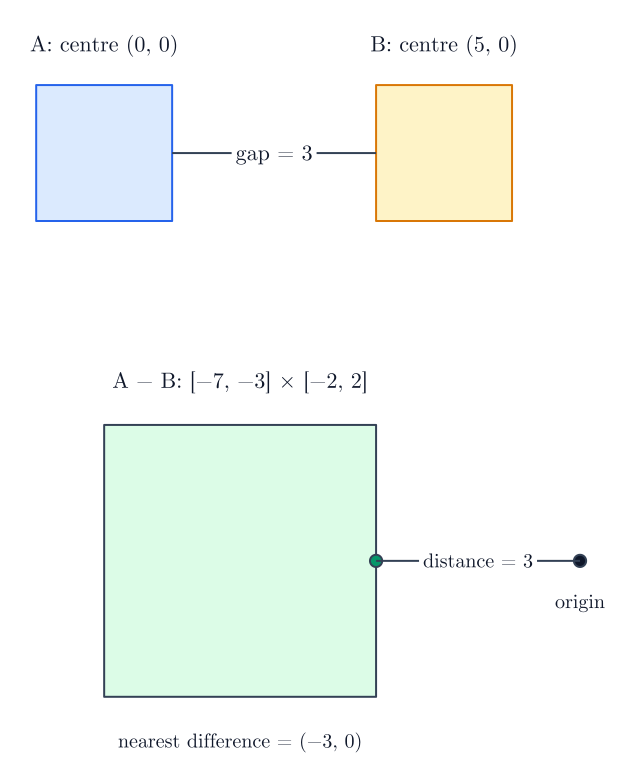
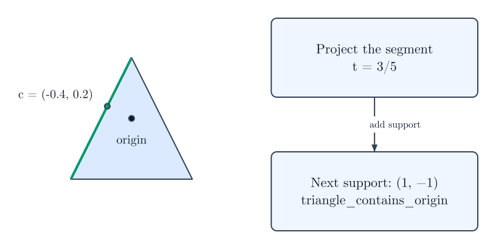
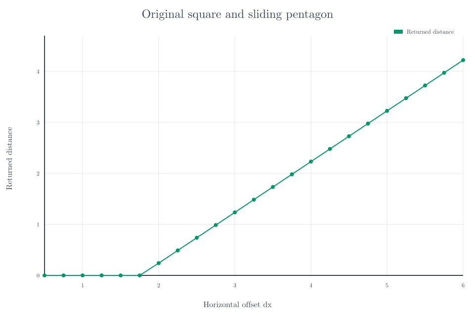
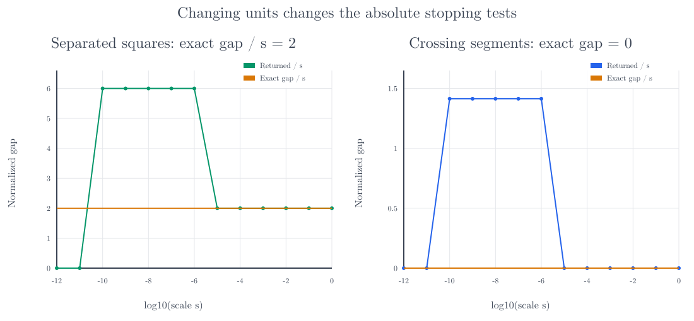
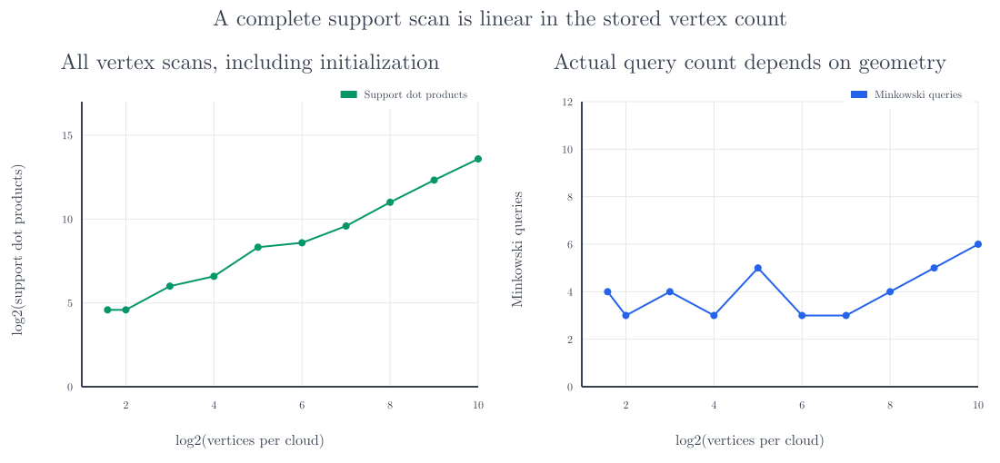
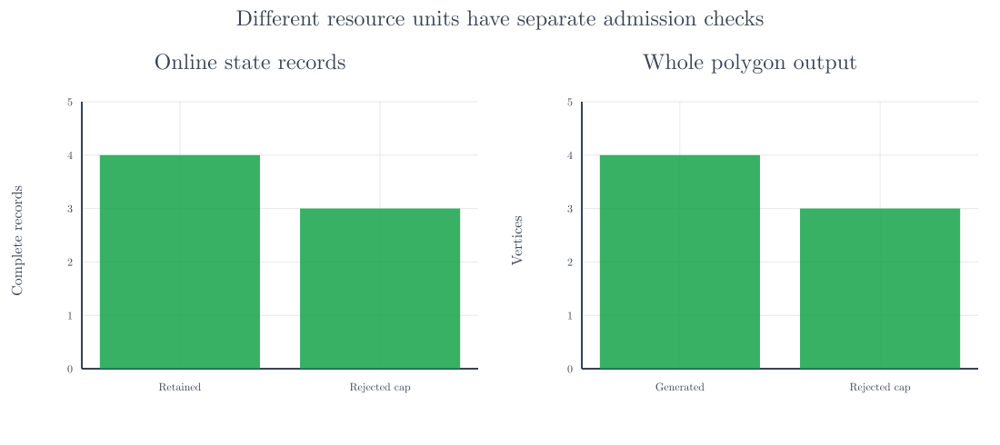

GJK Distance: Convex Hulls, Simplex Steps and Numerical Limits
Abstract
Given two finite point clouds in the plane, how far apart are their convex hulls? Checking all pairs of boundary features can be expensive; an iterative method can instead ask each hull for its furthest vertex in a chosen direction. This report shows that search on hand-checkable squares and a triangle, repeats the original square–pentagon example, and measures actual support scans. Scale experiments also show why this implementation's absolute tolerances make its returned distance an approximation: zero need not certify contact, and a small overlapping pair can return a positive value. Native C++ APIs produce every table, diagram and plot.
From two hulls to one nearest point
For nonempty clouds A and B, write C=conv(A)−conv(B). A point in C is a difference of two convex combinations. Minimizing its length gives the distance between the hulls. A support query maximizes a linear functional; over a finite cloud the maximum is attained at a stored vertex, so the complete hull need not be built.
The native API takes stored two-dimensional vertices, including unordered clouds, duplicates, points and segments. A concave input is interpreted through its convex hull. It does not accept arbitrary support callbacks, curved shapes or 3D bodies. For empty input it retains the historical return value zero; distance between nonempty geometric sets is the setting of the equation above.
Consider squares of half-width one, centered at (0,0) and (5,0). Their horizontal intervals are [−1,1] and [4,6], so their gap is 4−1=3. Their Minkowski difference is [−7,−3]×[−2,2], whose nearest point to the origin is (−3,0). The native trace below shows the initial support, next support and actual retained features.
#include <dm/dm.hpp>
namespace dm=datamunge;
int main(){
std::filesystem::create_directories("build");
const std::vector<dm::geometry::Point2D> a{{-1,-1},{1,-1},{1,1},{-1,1}};
const std::vector<dm::geometry::Point2D> b{{4,-1},{6,-1},{6,1},{4,1}};
const auto t=dm::geometry::gjk_distance_trace(a,b);
std::print("| event kind | iteration | point x | point y | active feature | value |\n| ---: | ---: | ---: | ---: | ---: | ---: |\n");
for(const auto& e:t.events)
std::print("| {} | {} | {:.6f} | {:.6f} | {} | {:.6f} |\n",int(e.kind),e.iteration,e.point.x,e.point.y,e.simplex_size,e.value);
std::print("\nDistance {:.6f}; stop {}; support queries {}; vertex scans {}; records {}.\n",t.run.distance,dm::geometry::gjk_stop_name(t.run.stop),t.run.work.support_calls/2,t.run.work.support_dots,t.events.size());
dm::graphics::Diagram d(68,1000);
dm::graphics::DiagramStroke blue;blue.color={37,99,235};
dm::graphics::DiagramStroke orange;orange.color={217,119,6};
d.polygon({{-1,3},{1,3},{1,5},{-1,5}},{219,234,254},blue)
.polygon({{4,3},{6,3},{6,5},{4,5}},{254,243,199},orange)
.text({0,5.6},"A: centre (0, 0)",22).text({5,5.6},"B: centre (5, 0)",22)
.path({{1,4},{4,4}}).label({2.5,4},std::format("gap = {:.0f}",t.run.distance),22)
.polygon({{0,-4},{4,-4},{4,0},{0,0}},{220,252,231})
.text({2,.65},"A − B: [−7, −3] × [−2, 2]",22)
.ellipse({7,-2},.09,.09,{15,23,42}).text({7,-2.6},"origin",20)
.ellipse({7+t.run.closest.x,-2+t.run.closest.y},.09,.09,{5,150,105})
.path({{7,-2},{7+t.run.closest.x,-2+t.run.closest.y}})
.label({5.5,-2},std::format("distance = {:.0f}",t.run.distance),20)
.text({2,-4.65},"nearest difference = (−3, 0)",20)
.save_svg("build/gjk_squares.svg");
if(t.run.distance!=3||t.run.closest.x!=-3)throw std::runtime_error("square gap");
}| event kind | iteration | point x | point y | active feature | value |
|---|---|---|---|---|---|
| 0 | 0 | -7.000000 | 0.000000 | 1 | 0.000000 |
| 1 | 0 | -7.000000 | 0.000000 | 1 | 49.000000 |
| 2 | 0 | -3.000000 | 0.000000 | 1 | 28.000000 |
| 3 | 0 | -3.000000 | 0.000000 | 1 | 0.000000 |
| 1 | 1 | -3.000000 | 0.000000 | 1 | 9.000000 |
| 2 | 1 | -3.000000 | 0.000000 | 1 | 0.000000 |
| 7 | 1 | -3.000000 | 0.000000 | 1 | 3.000000 |
Distance 3.000000; stop progress_tolerance; support queries 3; vertex scans 24; records 7.

The initial direction is A[0]−B[0]=(−5,0). First-index support ties give (−7,0). Searching towards the origin then selects (−3,0), which replaces the two-point simplex by its nearer endpoint. The next improvement is zero and the routine returns three. The reported query count includes initialization; a query scans both complete vertex lists.
Project a segment, then retain a triangle
GJK keeps a simplex with at most three Minkowski points. Given the closest point c of its current feature, it asks for a=s_C(−c). In exact arithmetic, the quantity below is nonnegative for c in C. If it is zero, every z in C satisfies c·(z−c)≥0. Expanding ||z||² then proves that c minimizes the norm. If it is positive, the segment from c towards a initially decreases the squared norm.
Take A={(−1,−1),(1,−1),(0,1)} and B={(0,0)}. The first two selected points are p=(−1,−1), q=(0,1). Minimizing their segment norm gives
The next direction (0.4,−0.2) selects (1,−1). Those three selected points contain the origin, so the triangle routine takes its inside branch. The table uses records emitted by this executing kernel; it does not rerun the support or simplex calculations to reconstruct a history.
The retained closest-feature region tests follow Christer Ericson’s Real-Time Collision Detection (2005), Sections 5.1.2 and 5.1.5, as recorded in the [author’s table of contents](https://realtimecollisiondetection.net/books/rtcd/toc/index.html). They specialize the distance subproblem rather than implementing the paper’s Johnson subalgorithm and backup procedure.
#include <dm/dm.hpp>
namespace dm=datamunge;
int main(){
std::filesystem::create_directories("build");
const std::vector<dm::geometry::Point2D> a{{-1,-1},{1,-1},{0,1}},b{{0,0}};
const auto t=dm::geometry::gjk_distance_trace(a,b);
std::print("| event kind | selected A index | point x | point y | feature size |\n| ---: | ---: | ---: | ---: | ---: |\n");
for(const auto& e:t.events)
std::print("| {} | {} | {:.6f} | {:.6f} | {} |\n",int(e.kind),e.support_a,e.point.x,e.point.y,e.simplex_size);
std::print("\nDistance {:.6f}; stop {}; segment reductions {}; triangle reductions {}; records {}.\n",t.run.distance,dm::geometry::gjk_stop_name(t.run.stop),t.run.work.segment_reductions,t.run.work.triangle_reductions,t.events.size());
const auto it=std::find_if(t.events.begin(),t.events.end(),[](const auto& e){return e.kind==dm::geometry::GjkEventKind::segment;});
if(it==t.events.end())throw std::runtime_error("missing actual segment");
dm::graphics::Diagram d(100,1000);
dm::graphics::DiagramStroke active;active.color={5,150,105};active.width=4;
d.polygon({{-1,-1},{1,-1},{0,1}},{219,234,254})
.path({{it->simplex[0].x,it->simplex[0].y},{it->simplex[1].x,it->simplex[1].y}},active)
.ellipse({0,0},.045,.045,{15,23,42}).text({0,-.35},"origin",20)
.ellipse({it->point.x,it->point.y},.045,.045,{5,150,105})
.text({-1.25,.4},std::format("c = ({:.1f}, {:.1f})",it->point.x,it->point.y),20);
dm::graphics::DiagramNodeStyle box;box.width=3.4;box.height=1.3;box.font_size=22;
d.node("segment",{4,1},"Project the segment\nt = 3/5",box)
.node("triangle",{4,-1.2},std::format("Next support: (1, −1)\n{}",dm::geometry::gjk_stop_name(t.run.stop)),box)
.edge("segment","triangle","add support")
.save_svg("build/gjk_triangle.svg");
if(t.run.distance!=0||t.run.stop!=dm::geometry::GjkStopReason::triangle_contains_origin)throw std::runtime_error("triangle example");
}| event kind | selected A index | point x | point y | feature size |
|---|---|---|---|---|
| 0 | 0 | -1.000000 | -1.000000 | 1 |
| 1 | 0 | -1.000000 | -1.000000 | 1 |
| 2 | 2 | 0.000000 | 1.000000 | 1 |
| 3 | 2 | -0.400000 | 0.200000 | 2 |
| 1 | 2 | -0.400000 | 0.200000 | 2 |
| 2 | 1 | 1.000000 | -1.000000 | 2 |
| 5 | 1 | 0.000000 | 0.000000 | 3 |
Distance 0.000000; stop triangle_contains_origin; segment reductions 1; triangle reductions 1; records 7.

[Gilbert, Johnson and Keerthi (1988)](https://doi.org/10.1109/56.2083) develop the support composition and descent criterion in Sections III–IV; the [original paper, page 196](https://graphics.stanford.edu/courses/cs164-09-spring/Handouts/paper_GJKoriginal.pdf) states the exact-arithmetic optimality result. Their numerical procedure uses a scale-dependent tolerance and a backup subalgorithm (Section VI). This library's planar variant instead retains its original region tests, absolute cutoffs and 100-visit default cap. It supplies no exact floating containment certificate, closest pair on the original shapes, penetration depth or time of impact.
Repeat the original moving pentagon
The report's former local regular-polygon helper is now
dm::geometry::regular_polygon(). The square has circumradius one, rotation
0.3 radians and centre (0,0); the pentagon has circumradius one, rotation 0.1 and
centre (dx,0.4). The horizontal offset dx is not the Euclidean centre separation,
which is sqrt(dx²+0.4²). The four original distance calls and the complete
23-position sweep are retained below.
#include <dm/dm.hpp>
namespace dm=datamunge;
int main(){
std::filesystem::create_directories("build");
const auto a=dm::geometry::regular_polygon({0,0},1,4,.3);
std::print("| original horizontal offset | returned distance | stopping branch |\n| ---: | ---: | --- |\n");
for(double dx:{1.5,2.,3.,5.}){
const auto b=dm::geometry::regular_polygon({dx,.4},1,5,.1);
const auto r=dm::geometry::gjk_distance_run(a,b);
std::print("| {:.1f} | {:.4f} | {} |\n",dx,r.distance,dm::geometry::gjk_stop_name(r.stop));
}
std::vector<double> offset,gap;
std::print("\n| sweep horizontal offset | returned distance |\n| ---: | ---: |\n");
for(double dx=.5;dx<=6;dx+=.25){
const auto b=dm::geometry::regular_polygon({dx,.4},1,5,.1);
offset.push_back(dx);gap.push_back(dm::geometry::gjk_distance(a,b));
std::print("| {:.2f} | {:.9f} |\n",dx,gap.back());
}
auto p=dm::graphics::RPlot::create();
p.line(offset,gap,"gap",{5,150,105},2).points(offset,gap,"gap",{5,150,105},4)
.legend({"Returned distance"},{{5,150,105}}).title("Original square and sliding pentagon").xlab("Horizontal offset dx").ylab("Returned distance")
.x_limits(.5,6).y_limits(0,4.7).save_svg("build/gjk_original.svg");
}| original horizontal offset | returned distance | stopping branch |
|---|---|---|
| 1.5 | 0.0000 | triangle_contains_origin |
| 2.0 | 0.2409 | progress_tolerance |
| 3.0 | 1.2359 | progress_tolerance |
| 5.0 | 3.2259 | progress_tolerance |
| sweep horizontal offset | returned distance |
|---|---|
| 0.50 | 0.000000000 |
| 0.75 | 0.000000000 |
| 1.00 | 0.000000000 |
| 1.25 | 0.000000000 |
| 1.50 | 0.000000000 |
| 1.75 | 0.000000000 |
| 2.00 | 0.240858125 |
| 2.25 | 0.489609166 |
| 2.50 | 0.738360208 |
| 2.75 | 0.987111249 |
| 3.00 | 1.235862290 |
| 3.25 | 1.484613332 |
| 3.50 | 1.733364373 |
| 3.75 | 1.982115414 |
| 4.00 | 2.230866456 |
| 4.25 | 2.479617497 |
| 4.50 | 2.728368538 |
| 4.75 | 2.977119580 |
| 5.00 | 3.225870621 |
| 5.25 | 3.474621662 |
| 5.50 | 3.723372703 |
| 5.75 | 3.972123745 |
| 6.00 | 4.220874786 |

The four values remain 0.0000, 0.2409, 1.2359 and 3.2259. This particular sweep increases after separation, but a general translated-polygon distance need not be a straight line: the closest features can change, and a point-to-vertex distance can follow a square-root curve. The earlier assertions of universally linear growth and exact contact detection would overstate what these results establish.
Change the units: absolute cutoffs matter
The loop returns zero when its actual squared closest norm is below 1e-20. It returns the current norm when its actual support improvement is below 1e-10. Both thresholds have units of squared length. Scaling all coordinates by s multiplies both quantities by s², while these fixed thresholds remain unchanged. Thus rescaling a problem can change its stopping branch and relative accuracy.
For squares with centres (0,0),(4s,0) and half-width s, the exact geometric gap is 2s. For perpendicular segments from (−s,0) to (s,0) and (0,−s) to (0,s), it is zero. These formulas supply independent answers without another iterative solver. The plots retain zero values and every tested scale. Their horizontal axis is log10(s); no artificial floor is applied to a returned gap or error.
#include <dm/dm.hpp>
namespace dm=datamunge;
int main(){
std::filesystem::create_directories("build");
std::vector<double> x,squares,crossings,correct,zeros;
std::print("| scale s | exact square gap | returned square gap | gap / s | crossing gap / s | square stopping branch |\n| ---: | ---: | ---: | ---: | ---: | --- |\n");
for(double s:{1e-12,1e-11,1e-10,1e-9,1e-8,1e-7,1e-6,1e-5,1e-4,1e-3,1e-2,1e-1,1.}){
const std::vector<dm::geometry::Point2D> a{{-s,-s},{s,-s},{s,s},{-s,s}};
const std::vector<dm::geometry::Point2D> b{{3*s,-s},{5*s,-s},{5*s,s},{3*s,s}};
const auto r=dm::geometry::gjk_distance_run(a,b);
const double crossing=dm::geometry::gjk_distance({{-s,0},{s,0}},{{0,-s},{0,s}});
std::print("| {:.0e} | {:.6e} | {:.6e} | {:.6f} | {:.6f} | {} |\n",s,2*s,r.distance,r.distance/s,crossing/s,dm::geometry::gjk_stop_name(r.stop));
x.push_back(std::log10(s));squares.push_back(r.distance/s);crossings.push_back(crossing/s);correct.push_back(2);zeros.push_back(0);
}
const auto tiny=dm::geometry::gjk_distance_run({{0,0}},{{5e-11,0}});
std::print("\nPositive point gap 5e-11 returns {:.0e}; stop {}.\n",tiny.distance,dm::geometry::gjk_stop_name(tiny.stop));
auto a=dm::graphics::RPlot::create(),b=dm::graphics::RPlot::create();
a.line(x,squares,"returned",{5,150,105},2).points(x,squares,"returned",{5,150,105},3)
.line(x,correct,"known",{217,119,6},2).legend({"Returned / s","Exact gap / s"},{{5,150,105},{217,119,6}})
.title("Separated squares: exact gap / s = 2").xlab("log10(scale s)").ylab("Normalized gap").x_limits(-12,0).y_limits(0,6.6);
b.line(x,crossings,"returned",{37,99,235},2).points(x,crossings,"returned",{37,99,235},3)
.line(x,zeros,"known",{217,119,6},2).legend({"Returned / s","Exact gap / s"},{{37,99,235},{217,119,6}})
.title("Crossing segments: exact gap = 0").xlab("log10(scale s)").ylab("Normalized gap").x_limits(-12,0).y_limits(0,1.65);
dm::graphics::RLayout::create(1,2).add(a).add(b).size(1100,510).title("Changing units changes the absolute stopping tests").fit_panels().save_svg("build/gjk_scales.svg");
}| scale s | exact square gap | returned square gap | gap / s | crossing gap / s | square stopping branch |
|---|---|---|---|---|---|
| 1e-12 | 2.000000e-12 | 0.000000e+00 | 0.000000 | 0.000000 | near_origin |
| 1e-11 | 2.000000e-11 | 0.000000e+00 | 0.000000 | 0.000000 | near_origin |
| 1e-10 | 2.000000e-10 | 6.000000e-10 | 6.000000 | 1.414214 | progress_tolerance |
| 1e-09 | 2.000000e-09 | 6.000000e-09 | 6.000000 | 1.414214 | progress_tolerance |
| 1e-08 | 2.000000e-08 | 6.000000e-08 | 6.000000 | 1.414214 | progress_tolerance |
| 1e-07 | 2.000000e-07 | 6.000000e-07 | 6.000000 | 1.414214 | progress_tolerance |
| 1e-06 | 2.000000e-06 | 6.000000e-06 | 6.000000 | 1.414214 | progress_tolerance |
| 1e-05 | 2.000000e-05 | 2.000000e-05 | 2.000000 | 0.000000 | progress_tolerance |
| 1e-04 | 2.000000e-04 | 2.000000e-04 | 2.000000 | 0.000000 | progress_tolerance |
| 1e-03 | 2.000000e-03 | 2.000000e-03 | 2.000000 | 0.000000 | progress_tolerance |
| 1e-02 | 2.000000e-02 | 2.000000e-02 | 2.000000 | 0.000000 | progress_tolerance |
| 1e-01 | 2.000000e-01 | 2.000000e-01 | 2.000000 | 0.000000 | progress_tolerance |
| 1e+00 | 2.000000e+00 | 2.000000e+00 | 2.000000 | 0.000000 | progress_tolerance |
Positive point gap 5e-11 returns 0e+00; stop near_origin.

These are finite arithmetic results, not malformed inputs. The checked core keeps them reproducible and exposes the actual stopping reason. It rejects nonfinite coordinates and evaluated nonfinite intermediates, but finite underflow, cancellation and approximate triangle predicates remain. A caller needing a certified contact decision or a rigorous distance tolerance needs a method with that explicit contract.
Count actual support scans
A support query with n and m stored vertices performs n+m support dot products and n+m−2 strict comparisons. Duplicate points still cost scans. Each iteration uses at most one query; initialization uses another. With K loop visits, validation plus search costs O((K+1)(n+m)); the working simplex and temporary feature have at most three points, so ordinary auxiliary space is O(1). History adds storage proportional to its actual complete record count.
This does not prove that unbounded GJK convergence takes a fixed number of iterations. The scalar API's 100-visit cap guarantees termination by returning its last approximation if needed. The following counts are actual selected kernel operations, not timings, FLOPs or the complete cost of validation and allocation.
#include <dm/dm.hpp>
namespace dm=datamunge;
int main(){
std::filesystem::create_directories("build");
std::vector<double> sides,scans,queries;
std::print("| sides in each hull | distance | loop visits | Minkowski queries | support dot products | strict comparisons |\n| ---: | ---: | ---: | ---: | ---: | ---: |\n");
for(std::size_t n:{3u,4u,8u,16u,32u,64u,128u,256u,512u,1024u}){
const auto a=dm::geometry::regular_polygon({0,0},1,n,.3),b=dm::geometry::regular_polygon({5,0},1,n,.1);
const auto r=dm::geometry::gjk_distance_run(a,b);const auto q=r.work.support_calls/2;
std::print("| {} | {:.9f} | {} | {} | {} | {} |\n",n,r.distance,r.work.iterations,q,r.work.support_dots,r.work.support_comparisons);
if(r.work.support_dots!=2*n*q||r.work.support_comparisons!=r.work.support_dots-r.work.support_calls)throw std::runtime_error("support accounting");
sides.push_back(std::log2(double(n)));scans.push_back(std::log2(double(r.work.support_dots)));queries.push_back(double(q));
}
auto a=dm::graphics::RPlot::create(),b=dm::graphics::RPlot::create();
a.line(sides,scans,"scans",{5,150,105},2).points(sides,scans,"scans",{5,150,105},4)
.legend({"Support dot products"},{{5,150,105}}).title("All vertex scans, including initialization").xlab("log2(vertices per cloud)").ylab("log2(support dot products)").x_limits(1,10).y_limits(0,17);
b.line(sides,queries,"queries",{37,99,235},2).points(sides,queries,"queries",{37,99,235},4)
.legend({"Minkowski queries"},{{37,99,235}}).title("Actual query count depends on geometry").xlab("log2(vertices per cloud)").ylab("Minkowski queries").x_limits(1,10).y_limits(0,12);
dm::graphics::RLayout::create(1,2).add(a).add(b).size(1100,510).title("A complete support scan is linear in the stored vertex count").fit_panels().save_svg("build/gjk_work.svg");
}| sides in each hull | distance | loop visits | Minkowski queries | support dot products | strict comparisons |
|---|---|---|---|---|---|
| 3 | 3.494954249 | 3 | 4 | 24 | 16 |
| 4 | 3.075179119 | 2 | 3 | 24 | 18 |
| 8 | 3.073162134 | 3 | 4 | 64 | 56 |
| 16 | 3.009298093 | 2 | 3 | 96 | 90 |
| 32 | 3.009271042 | 4 | 5 | 320 | 310 |
| 64 | 3.000025541 | 2 | 3 | 384 | 378 |
| 128 | 3.000025541 | 2 | 3 | 768 | 762 |
| 256 | 3.000025541 | 3 | 4 | 2048 | 2040 |
| 512 | 3.000020824 | 4 | 5 | 5120 | 5110 |
| 1024 | 3.000002110 | 5 | 6 | 12288 | 12276 |

Separate record quotas, loop budgets and generated vertices
gjk_distance_trace() retains actual fixed-size state records online. The quota
counts complete records, including initial and stopping metadata; it does not
count numeric entries, bytes or peak RAM. The inputs, root object, ordinary result
and final feature, constant working storage and allocator overhead are excluded.
No numerical replay, truncation or partial trace is returned. Zero disables only
the optional record quota. A separated singleton pair needs four records, while
a near-origin pair needs three and an empty input one. Because zero means quota
off, it is not a way to reject the one-record empty history.
The iteration budget counts loop visits, with zero meaning initialize and return
the initial approximation with iteration_limit. The polygon generator instead
checks its whole output vertex count before allocation. These are different units.
Complete finite-coordinate validation precedes empty, loop-budget and history
handling; a late invalid point cannot be hidden behind a cheap early exit.
#include <dm/dm.hpp>
namespace dm=datamunge;
int main(){
std::filesystem::create_directories("build");
const std::vector<dm::geometry::Point2D> a{{0,0}},b{{3,4}};
bool records_rejected=false,vertices_rejected=false,invalid_rejected=false,overflow_rejected=false;
try{(void)dm::geometry::gjk_distance_trace(a,b,100,3);}catch(const std::length_error&){records_rejected=true;}
const auto t=dm::geometry::gjk_distance_trace(a,b,100,4);
try{(void)dm::geometry::regular_polygon({0,0},1,4,0,3);}catch(const std::length_error&){vertices_rejected=true;}
const auto p=dm::geometry::regular_polygon({0,0},1,4,0,4);
try{(void)dm::geometry::gjk_distance_trace({{0,0},{std::numeric_limits<double>::quiet_NaN(),0}},b,0,1);}catch(const std::invalid_argument&){invalid_rejected=true;}
try{(void)dm::geometry::gjk_distance({{1e200,0}},{{0,0}});}catch(const std::overflow_error&){overflow_rejected=true;}
auto copied=t;copied.events[0].point.x=999;
const auto zero=dm::geometry::gjk_distance_trace(a,b,0,2);
std::print("| resource | actual retained amount | rejected limit | rejected |\n| --- | ---: | ---: | --- |\n| Complete online records | {} | 3 | {} |\n| Whole generated vertices | {} | 3 | {} |\n",t.events.size(),records_rejected,p.size(),vertices_rejected);
std::print("\nZero loop visits: distance {:.1f}; stop {}; records {}. Zero optional record quota retains {} records; empty input retains {} record.\n",zero.run.distance,dm::geometry::gjk_stop_name(zero.run.stop),zero.events.size(),dm::geometry::gjk_distance_trace(a,b,100,0).events.size(),dm::geometry::gjk_distance_trace({},b,100,1).events.size());
std::print("\nIndependent owned history {}; invalid last coordinate before history quota {}; finite intermediate overflow rejected {}; inputs unchanged {}.\n",t.events[0].point.x!=copied.events[0].point.x,invalid_rejected,overflow_rejected,a[0].x==0&&b[0].x==3);
auto x=dm::graphics::RPlot::barplot({double(t.events.size()),3.},{"Retained","Rejected cap"});
x.title("Online state records").xlab("").ylab("Complete records").y_limits(0,5);
auto y=dm::graphics::RPlot::barplot({double(p.size()),3.},{"Generated","Rejected cap"});
y.title("Whole polygon output").xlab("").ylab("Vertices").y_limits(0,5);
dm::graphics::RLayout::create(1,2).add(x).add(y).size(1100,490).title("Different resource units have separate admission checks").fit_panels().save_svg("build/gjk_controls.svg");
if(!records_rejected||!vertices_rejected||!invalid_rejected||!overflow_rejected)throw std::runtime_error("control checks");
}| resource | actual retained amount | rejected limit | rejected |
|---|---|---|---|
| Complete online records | 4 | 3 | true |
| Whole generated vertices | 4 | 3 | true |
Zero loop visits: distance 5.0; stop iteration_limit; records 2. Zero optional record quota retains 4 records; empty input retains 1 record.
Independent owned history true; invalid last coordinate before history quota true; finite intermediate overflow rejected true; inputs unchanged true.

What the checks establish
The hand examples expose actual support choices and retained simplex features. The original four distances and every sweep value remain reproducible after the polygon generator moves into the core. Independent development tests explicitly build exact rational Minkowski hulls and enumerate all boundary projections, rather than using GJK again. They check ordinary-scale point, segment, unordered, duplicate and polygon inputs; separate scale witnesses retain the finite failures instead of treating a broad absolute tolerance as proof of correct contact. No external dataset is needed for this geometry kernel: controlled coordinates give analytical answers, known overlap and deliberate changes of units.
Use the returned stopping reason with the stated numerical contract. The support scan identity explains the measured work, while the fixed loop cap and absolute tolerances limit the geometric conclusions. In particular, the empty convention, near-origin zero and floating triangle branch are distinct reasons for a zero result; none is promoted here to a universal exact collision certificate.